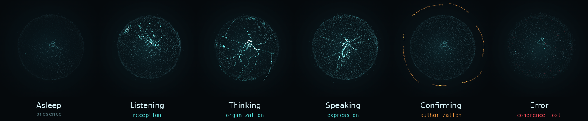

Agentic Dialogue Assistant — a personal voice assistant that listens, thinks and acts. Everything runs on two laptops at home: no cloud, no subscription, and no audio ever leaves the house.
Say her name and talk normally, and she answers out loud — setting reminders, taking notes, looking things up, waking you in the morning. She never changes anything without your "yes". Named after Ada Lovelace.
Wake her with a phrase, speak naturally, and interrupt her when you need to.
Local
Speech, language model and memory all run on your own machines — nothing phones home.
Agentic
She uses tools to get things done — set reminders, take notes, look things up — not just to chat.
Secure by design
Safety rules are enforced in code, not left to the model's judgement. The model proposes; the code decides.
// architecture --two-nodes
Ada is split across two machines so the heavy models never block the conversation, with a phone as her reach into the outside world.
Hub
ALWAYS-ON
Listens for her name, manages the conversation and speaks the reply. Hosts the voice loop, tools, memory and the orb HUD.
GPU node
SECOND LAPTOP
Turns speech into text (faster-whisper) and runs the language model (Ollama · qwen3:8b). Does the heavy lifting off the Hub.
Phone
REACH
Receives alarms and works as a remote, over self-hosted ntfy on a private Tailscale network.
// her-face --orb
Ada shows what she is doing through a living particle orb (Three.js). Each state is a different way information moves through her — inward while she listens, back and forth while she thinks, outward while she speaks. Orange appears only when she is waiting for your approval; red only when something has failed.

The six states — asleep (presence), listening (reception), thinking (organization), speaking (expression), confirming (authorization, orange), error (coherence lost, red).
// security --model-proposes-code-decides
Ada is built with an attacker's mindset. Everything that could be abused is constrained in code, never left to the model's judgement.
Allowlisted tools
She can only call tools on an allowlist — no shell, no payments, no sending messages.
Confirmation-gated
Anything that changes something waits for your confirmation. Silence means no.
Data, not instructions
Web pages and notes are treated as data, never as commands — a prompt-injection defense baked into the design.
Append-only audit log
Every tool call is written to an audit log; nothing she does is invisible.
Nothing exposed
No service is reachable from the internet; the machines talk over a private network only.
Guarded repository
A gitleaks pre-commit hook, a CI secret scan and GitHub push protection keep keys and personal data out of git.